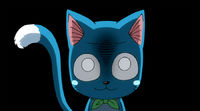

About
Happy is a small blue Exceed with a white stomach. He has a rectangular head, with pink ears, big black eyes with small, thin eyebrows, and light blue cheek marks near to his tiny whiskers (two on each side of his face). Happy has a triangular nose that leads to semi-round upper lips on the sides. His body is rectangular too, and being an Exceed, it has a structure that allows him to walk erect unlike normal cats. Despite having no thumbs, Happy is able to hold things. He has a long, white-tipped tail; and the other parts of his tail are blue. Additionally, Happy is able to use his tail to hold onto objects. Happy is usually seen carrying around a green backpack, where he keeps food and items that can be used in battle. This backpack also covers his green Guild Mark that is on his back. When using his Magic, he can grow a pair of large, feathered, angel-like wings that allow him to fly around and carry others. Happy usually does not wear clothes, the only few times being during the Fantasia Parade, to disguise himself in Edolas, and when his parents gave him clothes, again in Edolas.
Personality

Despite his small stature and eccentric appearance, Happy is very loyal to his teammates and fellow guild members and has a fairly significant amount of knowledge of the Magic world, in some cases, more than Lucy and Natsu. Given that he has been around Natsu Dragneel since his own birth, Happy often emulates Natsu in his actions and responses. He is quick-witted and cheeky, especially to Lucy Heartfilia; however, Happy sometimes shows little bits of a darker side of himself, for example when making a comment on the devastating aspects of the Magic of his comrades. He loves fish more than anything else, and he doesn't like dogs (except for Plue). He offers a comic relief with his catchphrase, "Aye!" or "Aye Sir!". He holds a respect and admiration to Exceed like himself and drools on Loke's shoulder when he finds out that Loke is the celestial spirit of Leo the lion. Happy has also developed a strong affection towards Carla, another Exceed who at first blows him off, but then begins to like and respect him.
Magic and Abilities

Aera (Ēra): Happy is able to sprout angelic wings that give him the ability to fly and carry objects or one person at a a time for a specific amount of time.